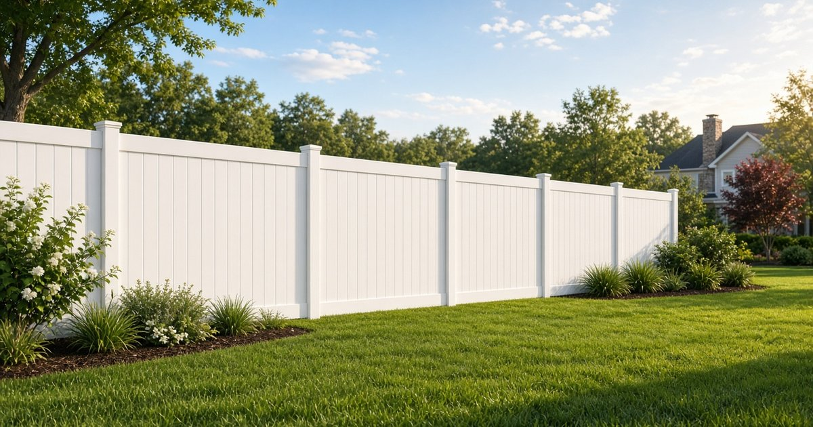

Holly Springs, NC · 27540
Fence Installation in Holly Springs, NC
Wood, vinyl, aluminum and chain link. Serving Holly Springs.
Fence installation in Holly Springs, NC
Holly Springs sits about five miles northwest of Fuquay-Varina, and it is growing fast. The U.S. Census Bureau counted 41,239 people here in 2020 and estimates about 50,288 in 2025 (Census QuickFacts). A lot of new homes means a lot of bare backyards.
What's different in Holly Springs
Holly Springs has its own town rules, so Fuquay-Varina's limits don't carry over. Many homes here are also in an HOA. The Town says it is the property owner's job to understand and follow the neighborhood's restrictive covenants (Town of Holly Springs: Fences). So plan on two checks before you build: the Town's rules and your HOA's rules.
Do I need a fence permit in Holly Springs?
Usually not. The Town says it “does not require a permit for fences,” but it may require a permit for certain types of fences, decorative walls, or retaining walls (Town of Holly Springs: Fences). The Town's page doesn't list which types, so if your plan includes a wall or anything unusual, ask the Town's Development Services department first.
How tall can a fence be in Holly Springs?
The Town lists these height limits for residential lots:
| Where on the lot | Maximum height |
|---|---|
| Front yard | 4 feet |
| Side and rear yards | 6 feet |
| Street edge around the outside of a subdivision | 6 feet |
Corner lots have one more rule. The Town says a fence along a side-corner lot line can't be placed closer to the front of the lot than half the depth of the building footprint. In plain terms, on a corner lot the side fence can't come forward past the middle of the house. For the full rule, the Town points to Section 3.4.2(H) of its Unified Development Ordinance (Town of Holly Springs: Fences).
Where can't a fence go in Holly Springs?
- The right-of-way. The Town says fences and other permanent structures can't go in the right-of-way.
- Public easements. That includes greenway, utility, water, sewer, and drainage easements.
- Private drainage easements are different. The Town says a fence may go there at the discretion of the HOA, landowner, or other group the easement serves, as long as it doesn't block or redirect water above ground or damage anything underground.
If your backyard backs up to a greenway or a drainage swale, look at your plat or survey for an easement before you pick a fence line. Source: Town of Holly Springs: Fences.
Property lines and setbacks
The Town says it has no setback requirement for fences next to another lot. It still suggests placing the fence a safe distance inside your property line so you don't build on your neighbor's land by mistake (Town of Holly Springs: Fences). Your HOA may have its own rule, so check that too.
Call 811 before anyone digs
The Town says to contact the North Carolina One-Call Center at 811 or (800) 632-4949 before work starts. The center contacts member utility companies, and the Town says it would locate Town-maintained utilities within 48 hours (Town of Holly Springs: Fences, NC 811). That 48 hours is the Town's own lines. State law says the person digging must give notice at least three full working days before the dig starts (G.S. 87-122), so call early.
Who do I call about Holly Springs fence rules?
Start with the Town's Development Services department. The Town's 311 line is 311 from inside Town limits, or (919) 577-3111 if you are outside Town limits (Holly Springs 311). Pull your HOA documents at the same time.
A simple order of steps
- Find your plat or survey and mark any easements.
- Read your HOA's fence rules and apply if your HOA requires it. Our HOA fence approval guide explains how that process usually works. The decision is up to your HOA.
- Check the Town's height limits and the corner-lot rule above.
- Call 811 before anyone digs.
- Get a free estimate once you know your fence line.
Just closed on a new home? Our Holly Springs new construction fence guide walks through the first few weeks after closing.
Holly Springs fence FAQ
Do I need a permit for a fence in Holly Springs?
Usually not. The Town says it does not require a permit for fences, but it may require one for certain types of fences, decorative walls, or retaining walls.
How tall can a backyard fence be in Holly Springs?
The Town lists 6 feet for side and rear yards and 4 feet for front yards.
Where can a fence go on a corner lot?
The Town says a fence along a side-corner lot line can't be closer to the front of the lot than half the depth of the building footprint.
Can I put a fence in a greenway or drainage easement?
Not in a public easement, such as a greenway, utility, water, sewer, or drainage easement. In a private drainage easement, the Town says it is up to the HOA, landowner, or other group the easement serves.
Soil and weather
Like Fuquay-Varina, Holly Springs is in North Carolina's Piedmont, where red clay subsoils such as the Cecil series are common. Clay holds water against fence posts, so drainage at the post base matters. Our guide to red clay and fence posts explains why. Spring pine pollen also shows up fast on white fences, which our vinyl fence page covers.
Fence types for Holly Springs homes
Vinyl privacy and picket, wood privacy, powder-coated aluminum including pool-code enclosures, and chain link. A newer house here may come with a bare backyard when the builder didn't include a fence.
Sources
- Town of Holly Springs: Fences
- Town of Holly Springs: Development Services
- Town of Holly Springs: Holly Springs 311
- U.S. Census Bureau QuickFacts: Holly Springs town
- USDA NRCS: Cecil soil series
- NC 811
- N.C. General Statutes, Chapter 87, Article 8A (G.S. 87-122)
Fence styles we install in Holly Springs
Nearby: Fuquay-Varina · Angier · Willow Spring · Garner
Related reading: New construction fences · HOA fence approval · Red clay fence posts · Vinyl fences

Free Estimate
Free Fence Estimate in Holly Springs
Tell us about your project and we'll reach out to schedule a free, no-obligation estimate. Prefer to talk now? Call (919) 276-8406.
- Free on-site measurement
- No obligation, no pressure
- Serving Fuquay-Varina and nearby